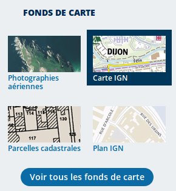
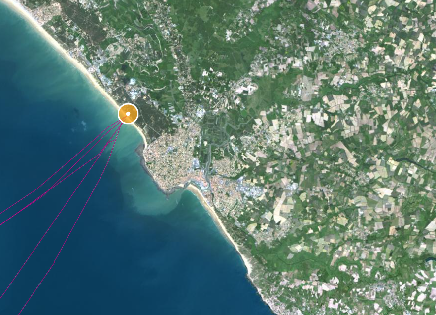

Activité 3 : Utilisation de GéoPortail⚓︎
1. Préambule⚓︎
La référence explicite à GéoPortail dans le programme de SNT peut se voir comme une volonté de promouvoir un service beaucoup moins connu que Google Maps. Il peut être intéressant de remarquer que GeoPortail est une plateforme nationale et respectueuse des données utilisateurs. De même, une recherche internet sur les tarifs de Google Maps peut permettre de découvrir comment la situation de quasi-monopole de Google lui a permis de décider de changer brutalement sa politique tarifaire en juin 2018. De nombreux sites ont alors dû se tourner vers des alternatives comme GéoPortail ou OpenStreetMap, qui possèdent des avantages que nous allons découvrir.
2. GéoPortail⚓︎
2.1 Principe de fonctionnement⚓︎
- Accès : https://www.geoportail.gouv.fr/
- GéoPortail permet de superposer une multitude de couches différentes sur des domaines très variés. Quatre couches (appelés fonds de cartes) très utilisées apparaissent en raccourci dans le menu latéral.

Le bouton « Voir tous les fonds de carte » permet d’afficher, classés par thèmes, toutes les ressources disponibles.
2.2 Questions⚓︎
Info
Pour chaque question, faites une capture d'écran du résultat obtenu sur géoportail et collez-la sur votre compte-rendu.
2.2.1 Cadastre⚓︎
Recherchez le numéro de la parcelle cadastrale de votre domicile. Mesurez la superficie de cette parcelle. Vous pouvez vous aider du tutoriel vidéo ci-dessous.
2.2.2 Gêne sonore⚓︎
Monsieur X veut acheter une maison au 22 chemin de Chilly à Champlan. Mais il ne supporte pas le bruit. Que lui conseillez-vous ?
2.2.3 Drone de loisirs⚓︎
Madame Y possède un drone de loisir et souhaite le faire voler au Bois du Pré à Cheptainville à une altitude d’environ 60 mètres. En a-t-elle le droit ? Sinon à quelle altitude est-elle limitée ?
2.2.4 Bureau de Poste⚓︎
Monsieur Z habite 5 allée des érables à Marolles en Hurepoix. Il veut savoir s'il peut aller à pied à un bureau de Poste en moins de 15 minutes. Pouvez-vous l'aider et lui indiquer l'adresse du bureau de poste ? (outil utile : clic-droit / Isochrone depuis ce lieu)
2.2.5 Au XIXème siècle⚓︎
Au XIXe siècle, comment appelait-on le champ sur lequel est aujourd'hui construit le Lycée ?
2.3 Recherche de renseignements en source ouverte (OSINT)⚓︎
2.3.1 Énigme 1⚓︎
- Ai-je le droit de prendre une photo aérienne de l’endroit aux coordonnées GPS : 48.59720341938274, 2.2030987620155575 ?
- Que trouve-t-on à ces coordonnées ?
- Quelles-en sont les activités ?
2.3.2 Énigme 2  ⚓︎
⚓︎

Sur cette image extraite de GéoPortail, le point jaune désigne une plage à laquelle s'intéresse beaucoup une très grande entreprise bien connue. Quelle est cette société ?
indice
Développement Durable / Mer et Littoral